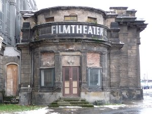
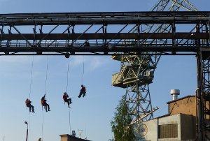

Buch & film
cora piantoni
Website von Cora Piantoni
Cora Piantonis Monographie „Buon lavoro!“, die Ende des Jahres 2017 bei Archive Books erscheint, stellt exemplarisch vier ihrer Filme vor. Piantonis Arbeit beschäftigt sich häufig mit den Jahren vor dem Mauerfall und dem politischen Umbruch, den das Ende des Kalten Krieges mit sich brachte. In ausgiebigen Interviews befragt sie an einem historischen Ereignis Beteiligte. Ausschnitte dieser Gespräche bilden die Tonspur ihrer Filme und die Basis ihrer Textarbeiten. Parallel entwickelt sie mit ihren Gesprächspartnern Reenactments der Ereignisse aus der Vergangenheit, bewegte Bilder, die für eine politische oder gesellschaftliche Situation stehen. Die Strategie des Reenactments findet sich im Buch wieder. Ein Ereignis, das für den Film nachgestellt wurde, wird im Buch nach-inszeniert bzw. neu interpretiert. Der Rechercheprozess, der zu den Arbeiten führt, wird anhand von Archivmaterial und Interviews gleichberechtigt neben den Arbeiten gezeigt.
samstag 7 okt 15.00 uhr werkstattkino
Wir waren das Kino

2010-201615 min – Deutsch
B+K+S+T: Cora Piantoni
Politik in der Höhe

201311 min – Polnisch
B+K+S+T: Cora Piantoni
Reenactment einer typischen Arbeitssituation in einer industriellen Umgebung. Ehemalige Świetlik-Mitglieder (hervorgegangen aus Solidarność) berichten über ihre Erfahrungen in der Firma, ihre Unterstützung der Opposition, und sprechen über ihr heutiges Engagement in der polnischen Gesellschaft und Politik
Arbeitslieder

11 min – Portugiesisch
B+K+S+T: Cora Piantoni
Traditionelle Lieder, die in
Portugal gesungen wurden, um den Arbeitsprozess zu
synchronisieren und zu erleichtern. Werden diese
traditionellen Lieder noch heute gesungen, wenn maschinelle
Arbeitsprozesse die Handarbeit ersetzt haben? Welche Rolle
spielen Geräusche, Rhythmus und Musik bei der Arbeit?
Radio GAP. DIe Interferenzen
15 min – Italienisch
B+K+S+T: Cora Piantoni
Die Gruppe 22 Ottobre oder Terzo
Radio GAP wurde im Oktober 1969 in Genua gegründet, Hauptstadt
des Widerstands der Partisanen gegen die deutsche Besatzung im
2. Weltkrieg. Radio GAP brachte die Informationen direkt
in die Wohnzimmer. Die Propaganda-Strategie, die sie
wählten, ähnelte einer künstlerischen Aktion, einer
Kommunikationsguerilla, wie in der Situationistischen Bewegung,
die zur gleichen Zeit in Paris agierte.